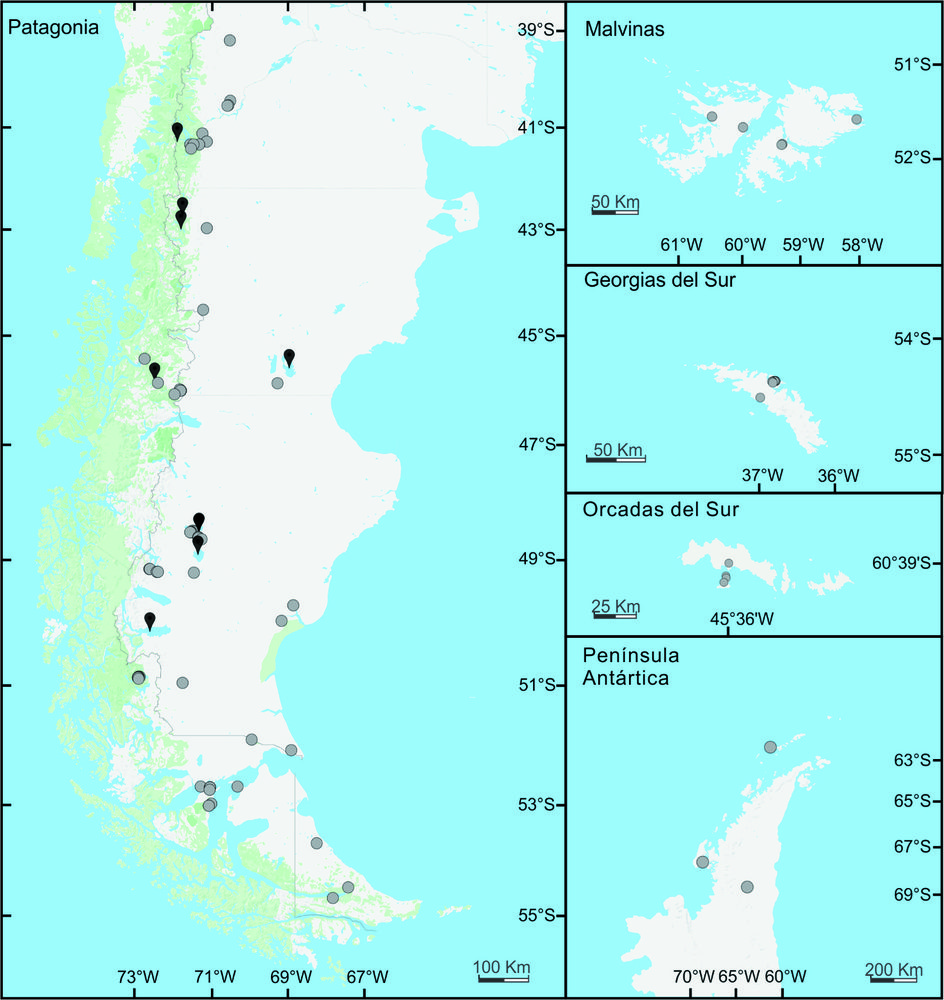
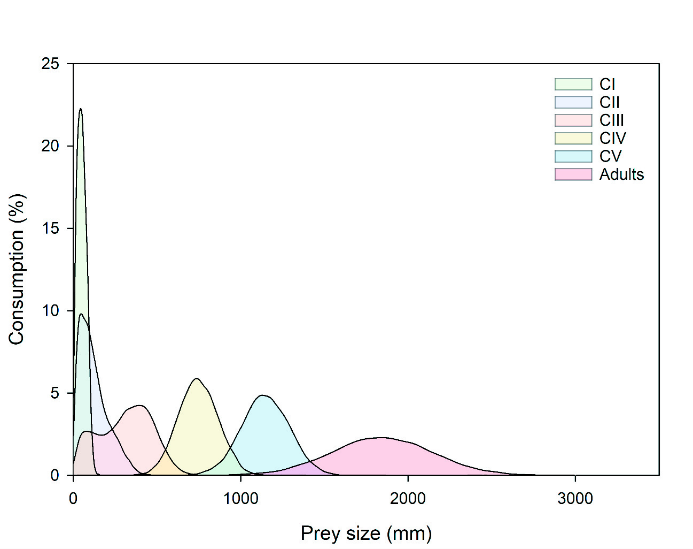
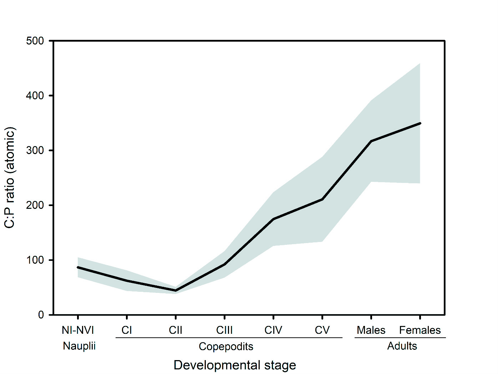
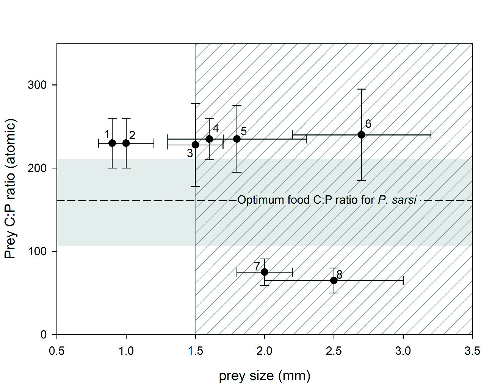
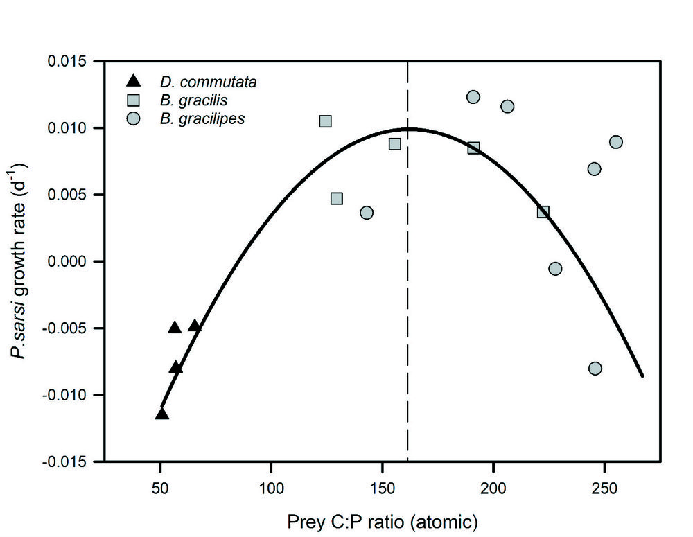
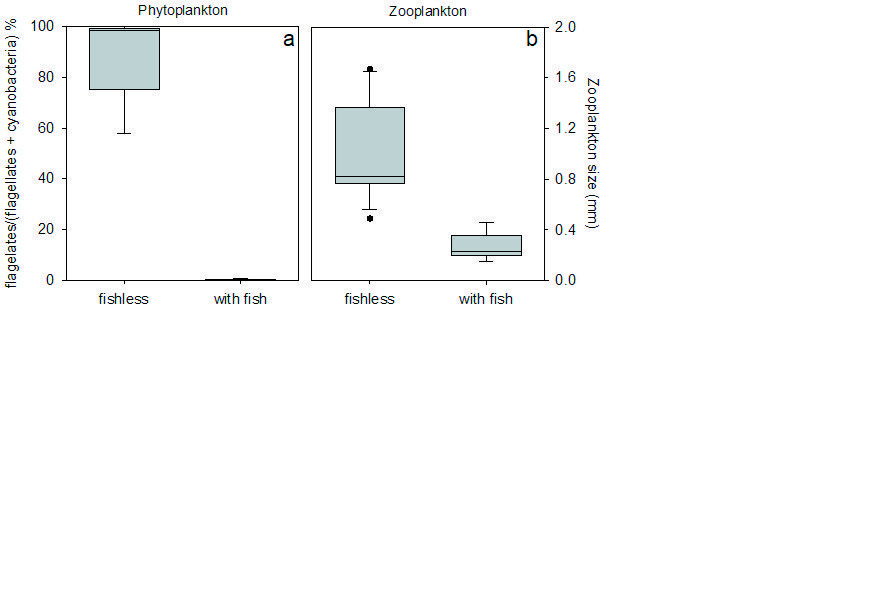

Ninguna presa individual puede satisfacer por sí sola los requerimientos de P. sarsi. Si se alimenta exclusivamente de cladóceros (Daphnia, C:P ~ 65), cae en el filo izquierdo: toxicidad/costo metabólico por exceso de fósforo y pérdida de biomasa (g < 0). Si consume únicamente copépodos (Boeckella, C:P > 228), cae en el filo derecho: limitación severa de fósforo para síntesis de ARN ribosomal (g ≤ 0). Requiere obligatoriamente combinar presas de perfiles elementales complementarios (Geometría Nutricional).
Restricciones Estequiométricas en Lagos Patagónicos: El Caso del Copépodo Gigante
Parabroteas sarsi es uno de los copépodos dulceacuícolas más grandes del mundo (hasta 7.5 mm) y el depredador invertebrado tope de los lagos patagónicos y antárticos. A diferencia de lo predicho por modelos tróficos clásicos, este depredador no encuentra ninguna presa natural que cumpla por sí sola con sus requerimientos elementales (relación Carbono:Fósforo, C:P).
La teoría del Filo de la Navaja demuestra que dietas con C:P excesivamente alto (copépodos pobres en fósforo) o excesivamente bajo (cladóceros con exceso de fósforo) inducen crecimiento somático negativo. Solo mediante la coexistencia de presas alternativas puede prosperar. La siembra antropogénica de truchas altera catastróficamente este equilibrio.
Lago Prístino Sin Peces: Parabroteas sarsi reina como depredador tope de invertebrados. Coexisten copépodos y grandes cladóceros (Daphnia). El fitoplancton es dominado por fitoflagelados (>95%) con agua oligotrófica transparente y baja biomasa de cianobacterias.
Los peces introducidos eliminan por depredación visual a las presas grandes (≥ 1.5 mm). Esto erradica a Daphnia, dejando solo pequeños copépodos de C:P > 230. Sin cladóceros para balancear la dieta, P. sarsi sufre inanición de fósforo y se extingue localmente. Al desaparecer los grandes filtradores herbívoros, se produce una cascada trófica descendente: los fitoflagelados caen a ~0% y las cianobacterias se disparan a más del 98%, degradando severamente el cuerpo de agua.
Transición de microfagia a consumo de rotíferos pequeños.
El organismo mantiene rígidamente su composición elemental corporal.
Superficie mandibular molar para triturar células algales finas.

Distribución Geográfica y Presencia de Peces
Mapa de distribución de Parabroteas sarsi en 101 cuerpos de agua de la Patagonia e islas subantárticas. Los símbolos grises indican lagos sin peces (92 lagos, dominante); los símbolos negros indican lagos con peces (solo 9, de los cuales 7 son lagos glaciares ultraprofundos con refugio afótico a 30-40 m).

Espectro de Tamaño de Alimento por Estadio
Distribución de consumo (%) en función del tamaño de presa consumida para cada estadio de desarrollo (CI a Adultos). Muestra el salto de presas microscópicas algales (20-100 µm) a presas carnívoras macroscópicas (>1500-3000 µm).

Dinámica Ontogenética de la Relación C:P
Relación Carbono:Fósforo somática de P. sarsi. En nauplios y CI-CII, el C:P es muy bajo (mínimo ~45 en CII) con varianza casi nula (homeostasis estricta). Al madurar hacia adultos (machos ~317, hembras ~350), la variabilidad se dispara drásticamente (homeostasis débil).

Tamaño y C:P de Presas vs. Remoción por Peces
Gráfico central del paper: tamaño (mm) vs C:P de las 8 presas principales. Línea punteada: óptimo dietario (162.5); franja gris: ventana de crecimiento positivo (108 a 215); área rayada: organismos ≥ 1.5 mm removidos por peces. Ninguna presa individual cae dentro de la franja gris.

Hipótesis del Filo de la Navaja (Knife-Edge)
Tasa de crecimiento (d−1) de P. sarsi en función del C:P del alimento en experimentos de laboratorio. La relación es parabólica: C:P excesivamente bajo genera tasas negativas (-0.012 d−1), al igual que C:P excesivamente alto, con un pico de crecimiento centrado en ~162.5.

Cascada Trófica: Desplazamiento a Cianobacterias
a) Proporción de flagelados en el fitoplancton en lagos sin peces (~98%) vs lagos con peces (caen a casi 0% y las cianobacterias superan el 98%). b) Tamaño del zooplancton: sin peces alcanza 1.7 mm; con peces colapsa a menos de 0.45 mm.
| # | Especie | Grupo Taxonómico | Tamaño (mm) | C:P Atómico | Vulnerabilidad a Truchas | Aporte Nutricional y Rol Trófico |
|---|
La presencia de Parabroteas sarsi en lagos someros es un bioindicador de integridad ecológica prístina previa a la invasión de salmónidos. La protección de estas cuencas sin peces es prioritaria no solo para la preservación de este invertebrado endémico, sino para la supervivencia de aves en peligro crítico de extinción como el macá tobiano (Podiceps gallardoi).